SIMSSA XVII: Infrastructure for Music Discovery
Posted by ehopkins on December 01, 2018
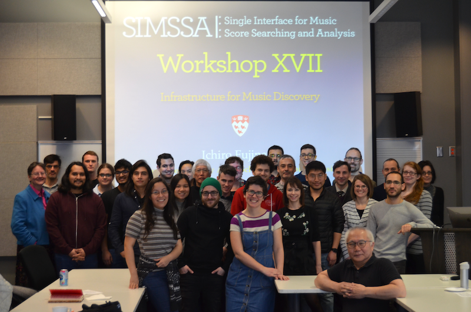
Earlier this month we had our seventeenth SIMSSA workshop, this time here at McGill in collaboration with CIRMMT). Sally Jo Cunningham gave a CIRMMT Distinguished Lecture earlier that week on Engagement with Personal Music Collections which inspired our theme: Infrastructure for Music Discovery. We had 19 different speakers covering everything from OMR to library reference models to linked data to country music! Here is a roundup of all the presenter’s slides and some pictures from the event.
To start the day, Ichiro Fujinaga gave us an overview of the project, including the most recent workshops and other activities. (Slides: PDF). After that, I (Emily Hopkins) gave an introduction to the different components of the SIMSSA project, explaining how they all come together in context. (Slides: Powerpoint and PDF)
Next, we had several updates from students working in the DDMAL labs on various parts of our OMR processes. Minh Anh Nguyen presented her work on the Interactive Classifier. (Slides: Powerpoint and PDF)
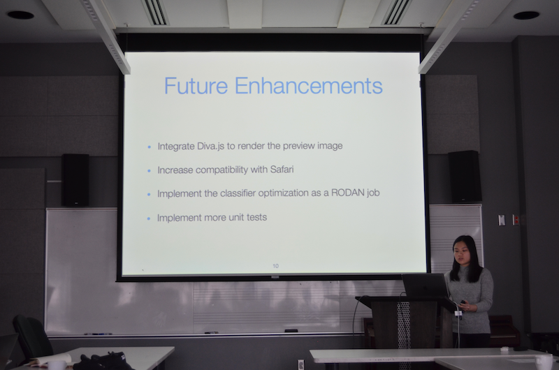
Then, Noah Baxter gave us a look at his recent progress on the pitch finding part of the process, including diagonal neume slicing and converting JSON OMR files to MEI. (Slides: PDF 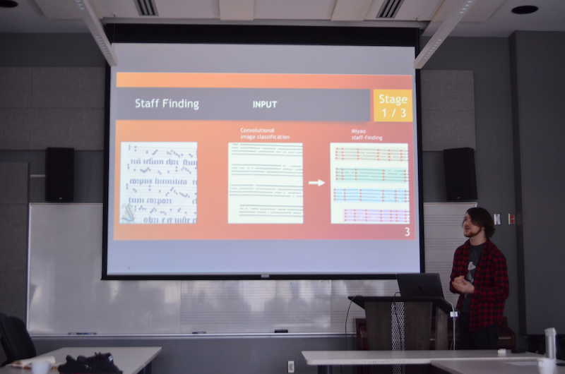
Next up is our ground truth image editor, Pixel.js – originally developed by Zeyad Saleh and Ké Zhang, most recently developed by Eric Liu. Our postdoc Gabriel Vigliensoni gave this presentation. (Slides: PDF)
After that, Tim De Reuse showed his most recent work developing a process for aligning musical texts with notation. (Slides: Powerpoint and PDF) 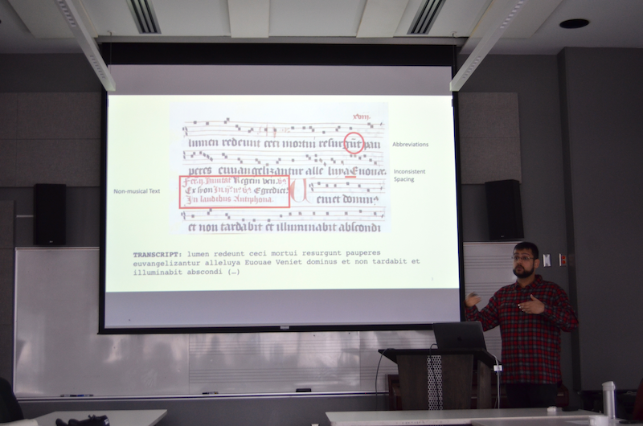
Zoé McLennan and Juliette Regimbal presented their latest work on Neon, a web-based neume editor that uses Verovio to render the music. (Slides: PDF) 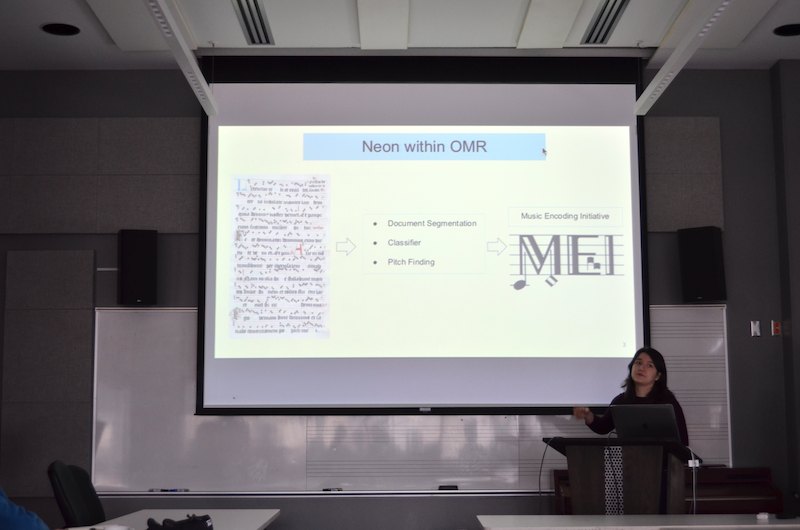 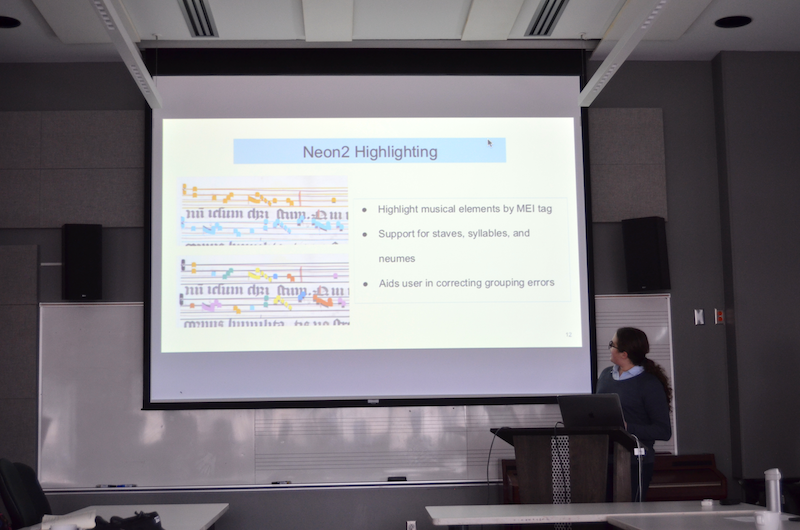
Alex Daigle then gave us an overview of Rodan, which is our web-based workflow manager for the OMR process. (Slides: Powerpoint and PDF) 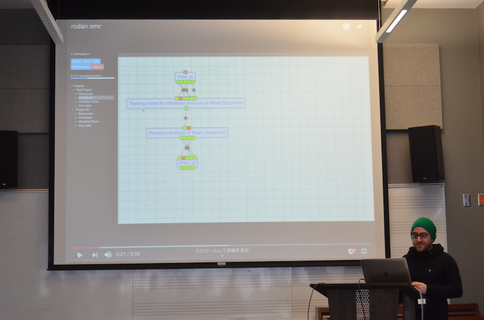
Néstor Nápoles showed off his recent work on the Cantus Editor, working for Cantus Ultimus. He also showed off the Cantus Index site, which brings many different chant collections (including the Cantus Database) together. (Slides: PDF) 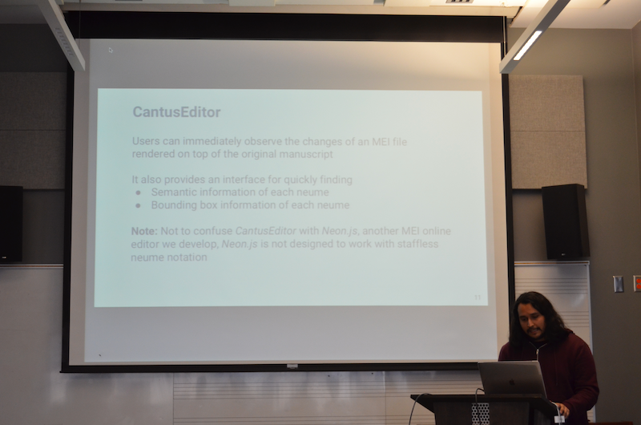
IIIF is already an important part of SIMSSA’s infrastructure, and we’ve also been working with the British Library on developing the IIIF AV player for the new IIIF audio/visual support. Andrew Kam demonstrated his work on the player. (Slides: Powerpoint and PDF) 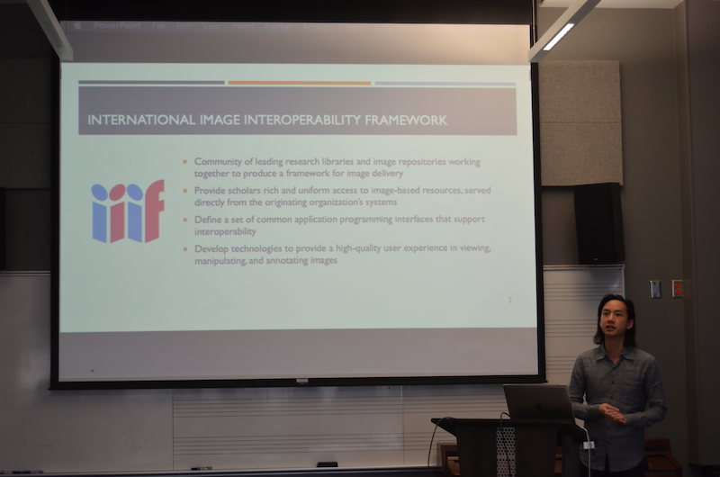
Martha Thomae is doing her dissertation on applying our OMR processes as well as her Scoring-Up tool to musical manuscripts from her home country of Guatemala. She gave us an overview of the process involved, including working with different organizations in Guatemala and learning how to photograph scores for preservation. (Slides: Powerpoint and PDF) 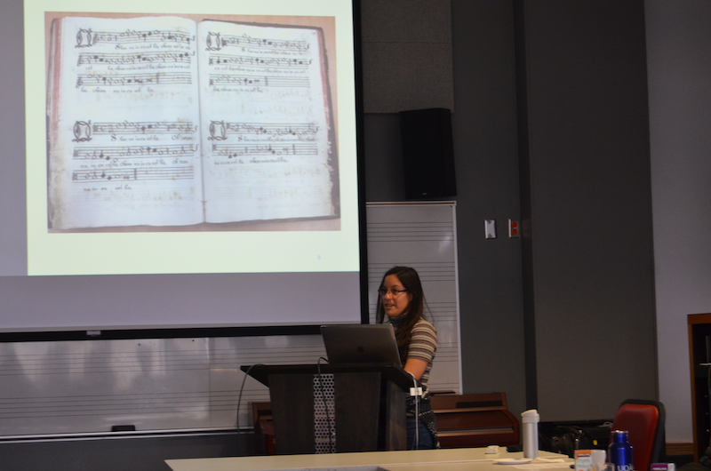
Matan Gover developed a musical query language as part of a class with Ichiro last year, and demonstrated it for us today. Instead of using text to query music, why not use actual music? Seen here is Craig Sapp’s Verovio Humdrum Viewer in action. (Slides: Keynote and PDF) 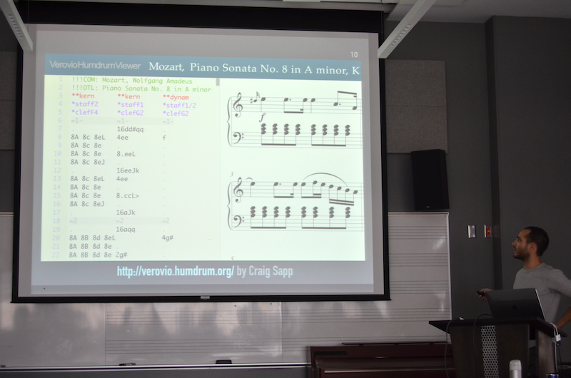
David Garfinkle talked about his work on PatternFinder, our melodic search technology. In addition to handling one-voice (monophonic) melodic search, David’s implementation can also find melodies distributed across multiple voices (polyphony). (Slides: Powerpoint and PDF) 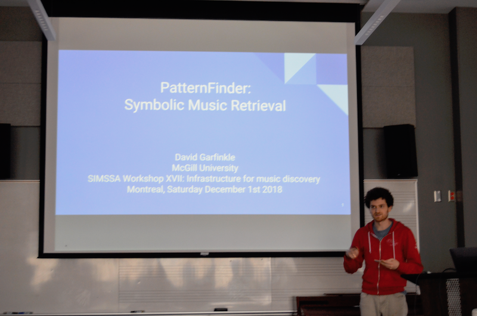
Eamonn Bell is a PhD student at Columbia and came to the workshop as a visiting guest. He shared his work gamifying crowdsourced machine learning ground truth development (Slides: PDF) 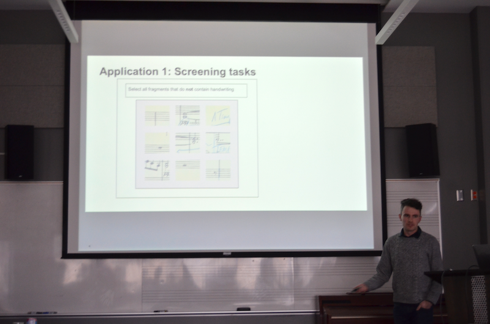
Julie Cumming presented her work with Cory McKay, using jSymbolic to explore questions and assumptions about the origins of the madrigal. This included ways in which jSymbolic both confirmed and challenged Julie’s predictions, and leads us to a lot of interesting new things to explore. (Slides: Powerpoint and PDF) 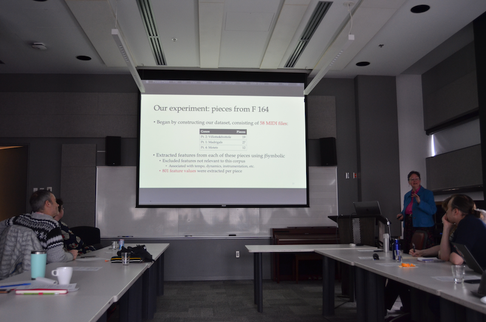
Audrey Laplante gave a presentation on the social barriers researchers face to doing digital scholarship. What sorts of rewards or consequences await those who are doing things differently? Computer use is sometimes still seen as a shortcut, or as shallower engagement than traditional scholarship. (Slides: Slideshare) 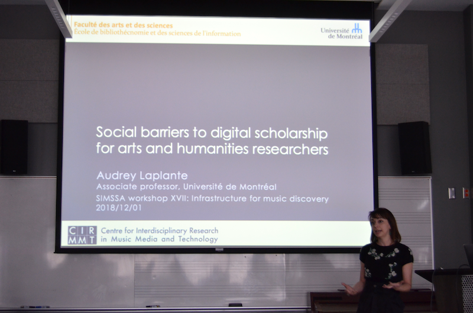
Next up, we were delighted to have special guest Jada Watson come give a talk about her research. She is a Professor at the University of Ottawa, and shared her research using discographic metadata to study identity in country music. She introduced us to her SongData project, studying genres and networks through data. (Slides: Powerpoint and PDF) 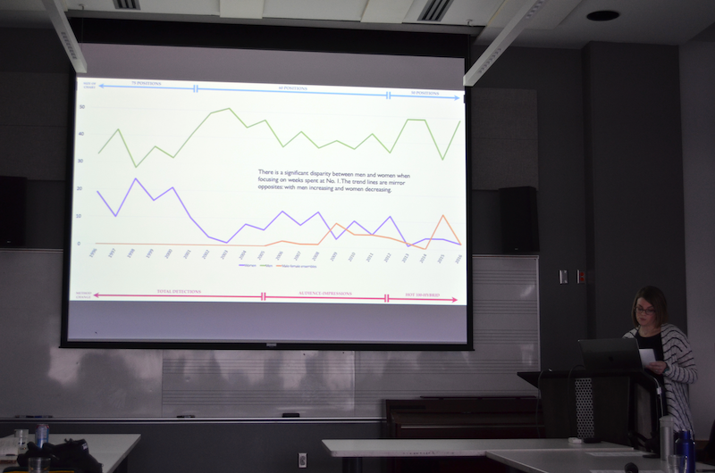
The final set of presentations concerned the new SIMSSA Database. A successor of the ELVIS database, it’s designed to make symbolic files accessible and reusable. First I (Emily Hopkins) gave an introduction of our data model. This was originally developed by Cory McKay and presented at DLfM (McKay et al, 2017). This included an comparison with the IFLA-LRM in terms of describing a “musical work”, as well as how we track provenance and out feature-based content search. (Slides: Powerpoint and PDF) 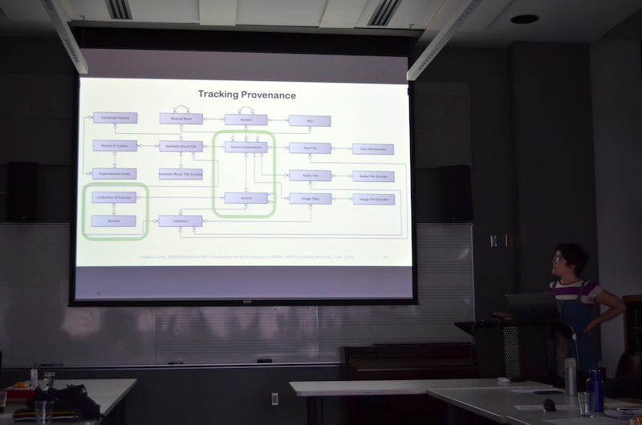
Next up, Gustavo Polins Pedro and Yaolong Ju introduced the actual interface for the database. This included our search and upload functions, as well as the ways we use Wikidata, VIAF, and various controlled vocabularies to try to improve the quality and interoperability of our content. (Slides: Keynote and PDF) 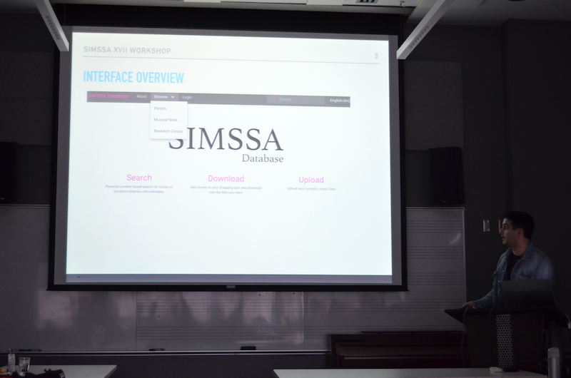 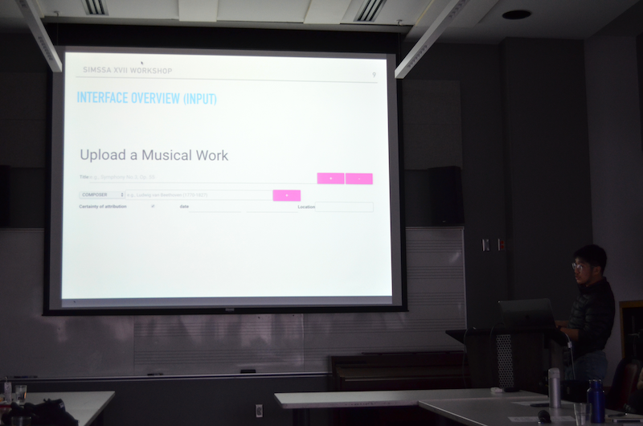
Finally, Ichiro gave a big-picture presentation about building a larger infrastructure for music discovery, connecting all the different sources available out there and making them queryable. (Slides: PDF). We then ended the day with a group discussion. 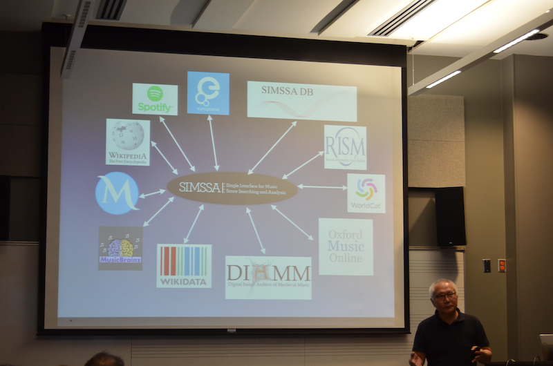
Thanks so much to everyone who presented, and special thanks to Vi-an Tran, Martha Thomae, Néstor Nápoles, and Yaolong Ju for their help with set-up, lunch, photos, note-taking, and more.
Happy Holidays to those celebrating, and see you in 2019!